Radare2使用全解
前言
说起逆向，你想到的可能是IDA Pro，OllyDBG。
而Radare2是一款开放源代码的逆向工程平台，它的强大超越你的想象，包括反汇编、分析数据、打补丁、比较数据、搜索、替换、虚拟化等等，同时具备超强的脚本加载能力，并且可以运行在几乎所有主流的平台（GNU/Linux, Windows, OSX...）上。可谓是一大神器。
安装
下载kali linux，自带神器
下载安装完之后，需要进行一些配置，才能使用xshell、scrt等工具远程登陆。
具体步骤，以后会整理分享。
去官方github按找指示进行安装
https://github.com/radare/radare2
安装命令：
$ sys/install.sh
使用
radare2 支持各种各样的平台，文件格式，具体可以看官网描述。它有很多各组件分别进行不同的工作。这些组件是：
- rax2 ---------> 用于数值转换
- rasm2 -------> 反汇编和汇编
- rabin2 -------> 查看文件格式
- radiff2 ------> 对文件进行 diff
- ragg2/ragg2cc ------> 用于更方便的生成shellcode
- rahash2 ------> 各种密码算法， hash算法
- radare2 ------> 整合了上面的工具
rax2
数值转换，程序的 help 菜单很明确了:
root@kali:~# rax2 -h
Usage: rax2 [options] [expr ...]
=[base] ; rax2 =10 0x46 -> output in base 10
int -> hex ; rax2 10
hex -> int ; rax2 0xa
-int -> hex ; rax2 -77
-hex -> int ; rax2 0xffffffb3
int -> bin ; rax2 b30
int -> ternary ; rax2 t42
bin -> int ; rax2 1010d
ternary -> int ; rax2 1010dt
float -> hex ; rax2 3.33f
hex -> float ; rax2 Fx40551ed8
oct -> hex ; rax2 35o
hex -> oct ; rax2 Ox12 (O is a letter)
bin -> hex ; rax2 1100011b
hex -> bin ; rax2 Bx63
ternary -> hex ; rax2 212t
hex -> ternary ; rax2 Tx23
raw -> hex ; rax2 -S < /binfile
hex -> raw ; rax2 -s 414141
-l ; append newline to output (for -E/-D/-r/..
-a show ascii table ; rax2 -a
-b bin -> str ; rax2 -b 01000101 01110110
-B str -> bin ; rax2 -B hello
-d force integer ; rax2 -d 3 -> 3 instead of 0x3
-e swap endianness ; rax2 -e 0x33
-D base64 decode ;
-E base64 encode ;
-f floating point ; rax2 -f 6.3+2.1
-F stdin slurp code hex ; rax2 -F < shellcode.[c/py/js]
-h help ; rax2 -h
-i dump as C byte array ; rax2 -i < bytes
-k keep base ; rax2 -k 33+3 -> 36
-K randomart ; rax2 -K 0x34 1020304050
-L bin -> hex(bignum) ; rax2 -L 111111111 # 0x1ff
-n binary number ; rax2 -n 0x1234 # 34120000
-o octalstr -> raw ; rax2 -o \162 \62 # r2
-N binary number ; rax2 -N 0x1234 # \x34\x12\x00\x00
-r r2 style output ; rax2 -r 0x1234
-s hexstr -> raw ; rax2 -s 43 4a 50
-S raw -> hexstr ; rax2 -S < /bin/ls > ls.hex
-t tstamp -> str ; rax2 -t 1234567890
-x hash string ; rax2 -x linux osx
-u units ; rax2 -u 389289238 # 317.0M
-w signed word ; rax2 -w 16 0xffff
-v version ; rax2 -v
比如输入rax2 -s 41414141 ,会返回 AAAA
rabin2
对各种文件格式进行解析。
rabin2 -I 168+r2 显示文件的信息
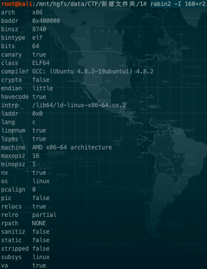
使用 -l 显示依赖库。
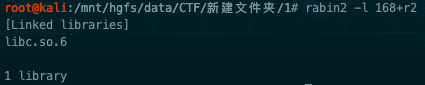
使用 -zz 显示字符串信息，可以显示 utf-8 等宽字节字符串。
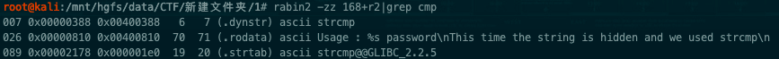
可以看到显示了长度，所在位置等信息。
通过使用 -O 选项可以修改一些文件的信息。
haclh@ubuntu:~$ rabin2 -O?
Operation string:
Change Entrypoint: e/0x8048000
Dump Symbols: d/s/1024
Dump Section: d/S/.text
Resize Section: r/.data/1024
Remove RPATH: R
Add Library: a/l/libfoo.dylib
Change Permissions: p/.data/rwx
Show LDID entitlements: C
比如修改 section 的属性
haclh@ubuntu:~$ rabin2 -S a.out | grep text
idx=14 vaddr=0x00400430 paddr=0x00000430 sz=386 vsz=386 perm=--rwx name=.text
haclh@ubuntu:~$ rabin2 -O p/.text/r a.out
wx 02 @ 0x1d60
haclh@ubuntu:~$ rabin2 -S a.out | grep text
idx=14 vaddr=0x00400430 paddr=0x00000430 sz=386 vsz=386 perm=--r-- name=.text
rasm2
这个工具用于进行各种平台的汇编和反汇编。该工具的主要选项有。
- -a 设置汇编和反汇编的架构（比如x86,mips, arm...）
- -L 列举支持的架构。
- -b 设置 位数
- -d，-D 反汇编 提供的 16进制字符串。
使用示例：
首先列举支持的架构（使用 head 只列举前面几项）
haclh@ubuntu:~$ rasm2 -L | head
_dAe 8 16 6502 LGPL3 6502/NES/C64/Tamagotchi/T-1000 CPU
_dA_ 8 8051 PD 8051 Intel CPU
_dA_ 16 32 arc GPL3 Argonaut RISC Core
a___ 16 32 64 arm.as LGPL3 as ARM Assembler (use ARM_AS environment)
adAe 16 32 64 arm BSD Capstone ARM disassembler
_dA_ 16 32 64 arm.gnu GPL3 Acorn RISC Machine CPU
_d__ 16 32 arm.winedbg LGPL2 WineDBG's ARM disassembler
adAe 8 16 avr GPL AVR Atmel
adAe 16 32 64 bf LGPL3 Brainfuck (by pancake, nibble) v4.0.0
_dA_ 16 cr16 LGPL3 cr16 disassembly plugin
使用 arm 插件，汇编 三条 nop 指令
haclh@ubuntu:~$ rasm2 -a arm "nop;nop;nop;"
0000a0e10000a0e10000a0e1
然后我们使用 -d 把它反汇编出来
haclh@ubuntu:~$ rasm2 -a arm -d 0000a0e10000a0e10000a0e1
mov r0, r0
mov r0, r0
mov r0, r0
我可以在命令后面加上 -r 打印出在 radare2中实现对应的功能，需要使用的命令( wa 命令的作用是，汇编给出的指令，并把汇编得到的数据写到相应位置，默认是当前位置)。
haclh@ubuntu:~$ rasm2 -a arm -d 0000a0e10000a0e10000a0e1 -r
e asm.arch=arm
e asm.bits=32
"wa mov r0, r0;mov r0, r0;mov r0, r0;"
ragg2/ragg2·cc
radare2 自己实现的 c 编译器，可以方便的写shellcode .
示例一：
代码如下
int main() { write (1,"hi\n", 3); exit(0); }
使用下面的命令，把它编译成x86 32位代码：
ragg2-cc -a x86 -b 32 -d -o test test.c
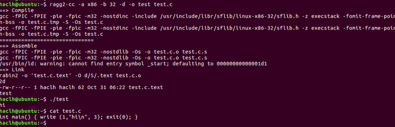 可以生成正常的 elf 文件用于测试，可以使用 -c 只编译出 shellcode 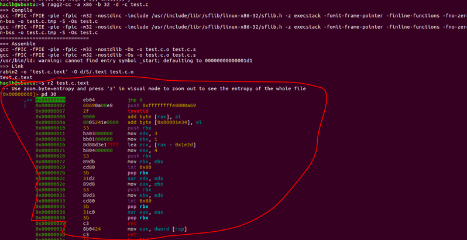 生成的 shellcode 存在于 test.c.text 文件里面，下面是用 radare2 反汇编得到的代码，可以看到使用了 系统调用来实现代码的功能。
使用 ragg2-cc 生成的 shellcode 可以使用 ragg2中的 xor 编码器来编码字符，绕过一些字符限制，比如 \x00。 首先生成shellcode 的16进制表示。
ragg2-cc -a x86 -b 32 -d -x test.c
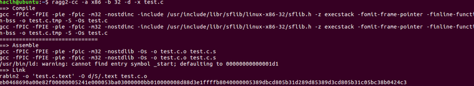 然后使用 rasm2 验证下 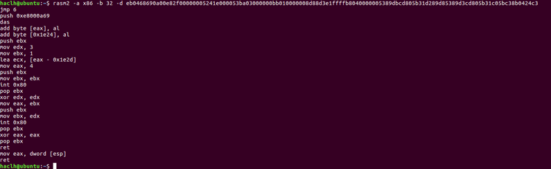 代码和上面的是一样的。 然后使用 ragg2 使用 xor 编码器编码 shellcode 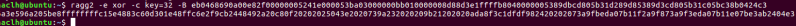 就是在 shellcode 执行前使用 xor 指令把shellcode 还原。这样就可以消除掉一些坏字符。
ragg2 也有自己 编写 shellcode 的语法。下面是一个示例，具体请看官方文档。 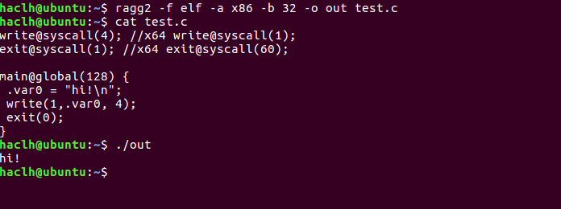 使用这种方式，我们就能使用最接近 汇编 的类c语言 来编写跨平台 shellcode
rahash2
用于使用加密算法，hash算法等计算值
使用-L 可以列举支持的算法，比如算算 md5
haclh@ubuntu:~$ rahash2 -a md5 -s admin
0x00000000-0x00000004 md5: 21232f297a57a5a743894a0e4a801fc3
radare2
最常用的工具了。整合了上面所有的工具。直接使用 r2 target_bin 进入程序。使用-d 选项进入调试模式。 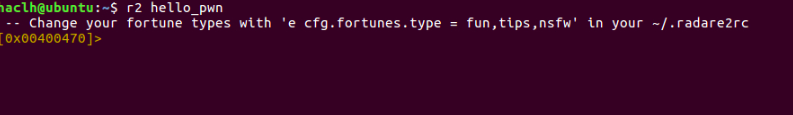
radare2 中的命令格式为
[.][times][cmd][~grep][@[@iter]addr!size][|>pipe] ;
px表示打印16进制数，默认从当前位置开始。参数控制打印的字节数，下面这张图应该就可以大概解释上面的格式了。 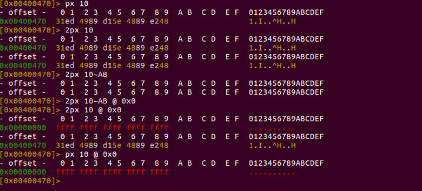 @ addr 表示该命令从 addr 开始执行。addr 不一定是 地址也可以是 radare2 中识别的符号，比如 main 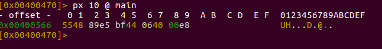 还有一个重要的东西要记得，在命令的后面加个 ? ，就可以查看帮助。直接输入? 可以查看所有的命令。 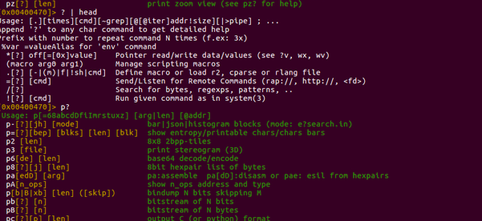 面按照我们在 ida 中使用的功能，来介绍 radare2
首先在 用 ida 分析程序时，在 ida 加载程序后默认会对程序进行分析。radare2 相应的功能是以 a 开头的。 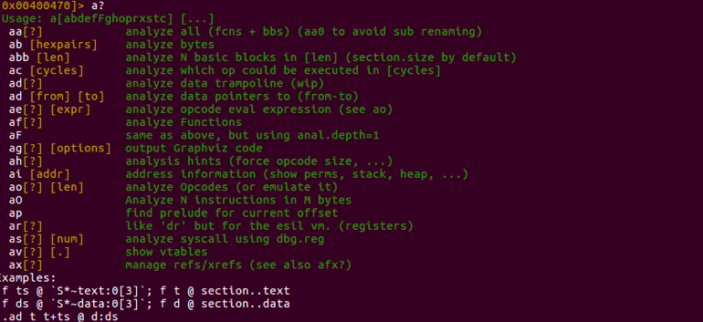 注释很简明了。我们使用 aaa 就可以进行完整分析了。 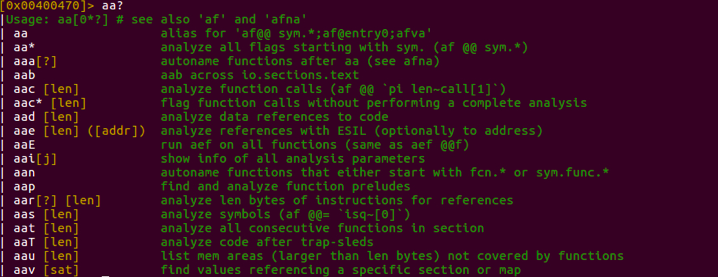 分析前 radare2 识别不了函数，分析后就可以正常打印函数代码了（pdf 打印函数代码） 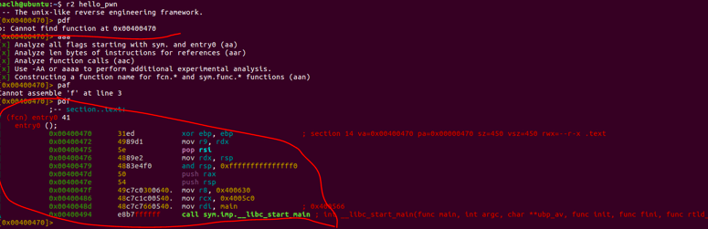 有时候我们不需要分析整个 二进制文件，或者有个函数 radare2没有识别出来我们可以 af 来分析该函数。 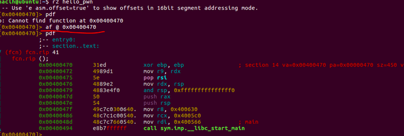 我们可以使用 s 跳转到想要跳转的位置。
跳转到 main 函数，并 定义该函数，然后打印函数代码 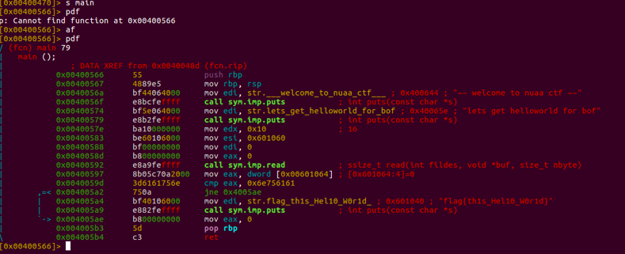 pd 类命令用于打印汇编信息。 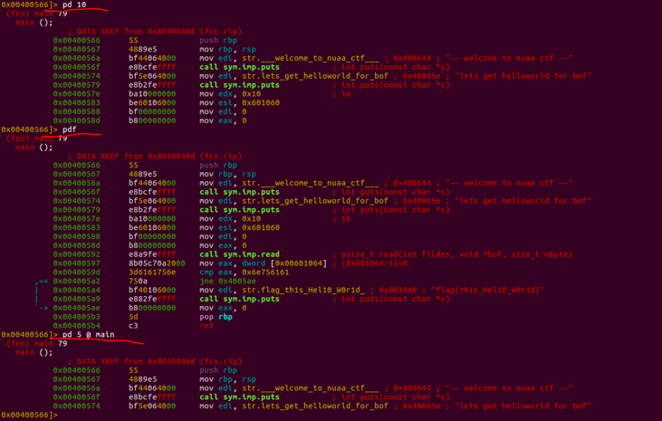 具体看帮助。
使用 VV 进入 图形化模式（需要是函数范围内）。 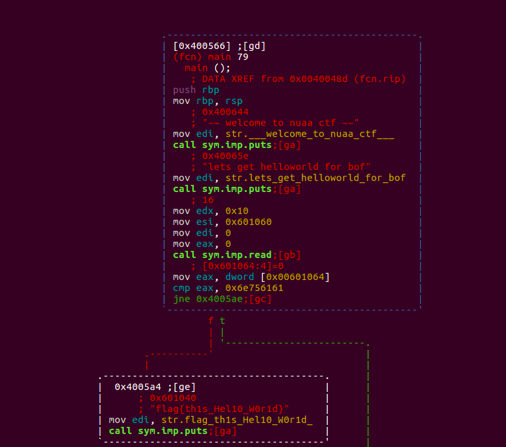 在图形化模式下，输入 ? 可以查看图形化模式的帮助。 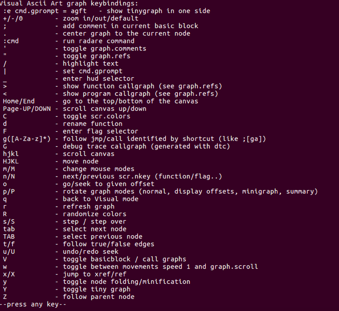
使用 hjkl 来移动图形
使用 p/P 切换图形模式
在图形模式下使用 : 可以输入radare2 命令
输入 ! ， 在调试的时候应该很有用 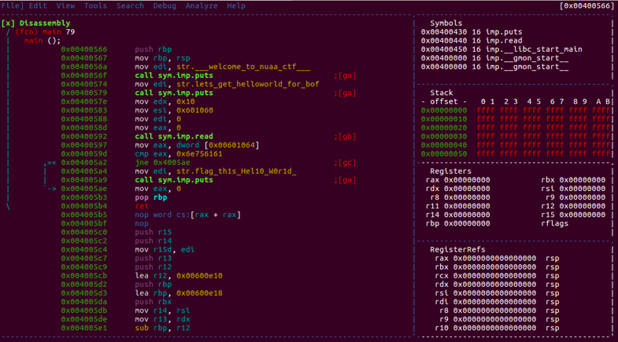 使用 空格 ，切换图形模式和文本模式
在文本模式模式下也可以使用 p 来切换视图。
剩下的看帮助。
下面介绍如何使用 radare2 patch程序。首先需要在打开文件时使用 r2 -w 来以可写模式打开文件，这样 pathch 才能应用到文件 ( 或者在 radare2 下使用 e io.cache=true, 来允许进行 patch, 不过这样的话文件的修改不会影响原文件 )
w 系列命令用于修改文件。
使用 wa 可以使用 汇编指令进行 patch
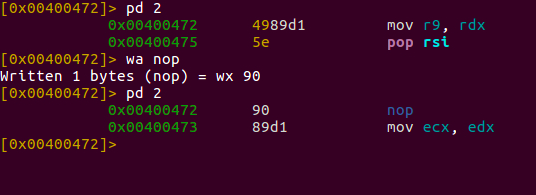
使用 "wa nop;nop;nop;nop;" 可以同时写入多条指令。
双引号不能省 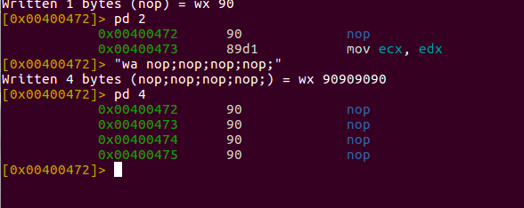 或者可以使用 wx 写入 16进制数据 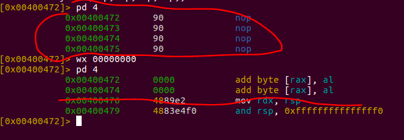 其他的请看 w? ，查看帮助。
还可以 可视化汇编/patch 程序
输入 Vp ，然后输入 A, 就可以了。 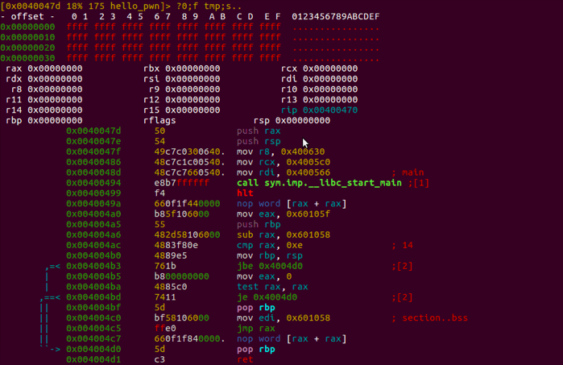 使用 / 系列命令可以搜索字符串， rop gadgets等 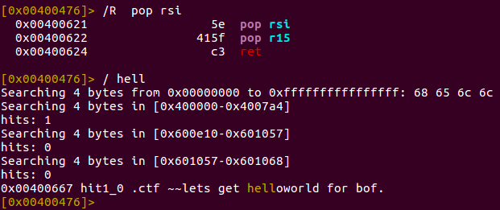 查询字符串交叉引用可以依次使用下列方法。 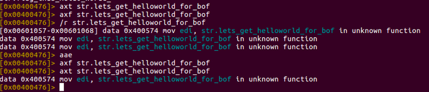 ax? 系列命令用于管理交叉引用。 /r 可以搜索交叉引用, aae 是使用radare2中的模拟执行功能，动态的检测交叉引用。
下面画重点
radare2中其实也是有 反编译功能, 使用 pdc 就可以查看伪代码，虽然和 ida 的还有很大的差距，但是在一些 ida 不支持 f5 的情况下这个功能还是不错的，可以用来看程序的大概逻辑。 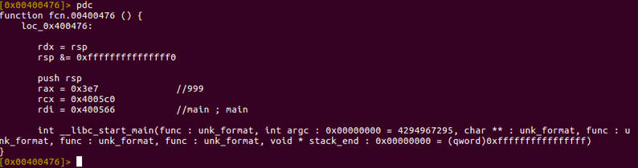 在图形化模式下，按下 $ 看看，有惊喜。 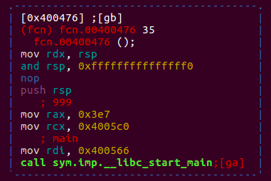 帮我们解析汇编指令，用 c 代码的格式来显示。妈妈再也不用担心我不会汇编了。
radare2和 ida 相比还有一个最大的优势，那就是它自带模拟执行功能。它使用了一种 esil 语言，来定义程序的行为，并且可以根据这个来模拟执行程序代码。
ESIL 的具体语法可以去看官方文档。下面列举两个示例：
mov ecx, ebx -> ebx,ecx,=
add ebx, edi ->edi,ebx,+=,$o,of,=,$s,sf,=,$z,zf,=,$c31,cf,=,$p,
可以使用 e asm.esil = true显示 esil 代码 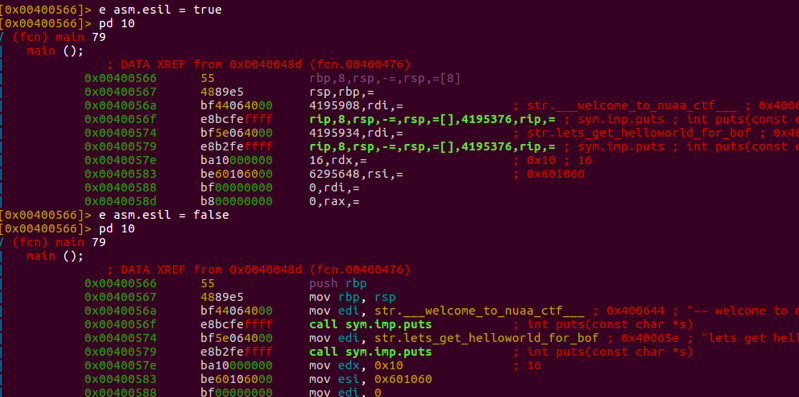 和 ESIL相关的命令是
ae?这一类指令。这个我也不熟悉，大概的用法是，使用 ae?这一类指令设置好 指令执行虚拟机的状态，然后设置好模拟执行的终止状态，在停止时，做一些操作，主要用于解密字符串，脱壳等等。
此外 radare2还支持各种语言对他进行调用， 以及拥有大量的插件。
总结
radare2还是很强大的，特别是全平台反编译，全平台模拟执行，各种文件的patch, 修改。感觉在 ida 没法 f5的平台上首选 radare2
常用命令
1. r2 filename 加载文件
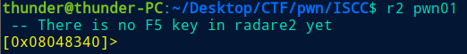
2. aaa分析程序中所有函数，分析前 radare2 识别不了函数，分析后就可以正常打印函数代码了（pdf 打印函数代码）,aa命令只分析主函数
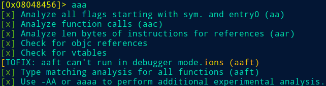 加个问号可以查看帮助，这里我们直接用aaa就可以分析完程序了 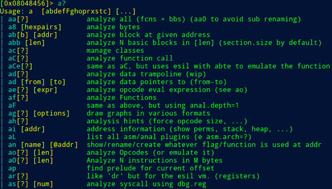
3. afl显示主函数，有时候我们不需要分析整个二进制文件，或者有个函数 radare2没有识别出来我们可以 af 来分析该函数。
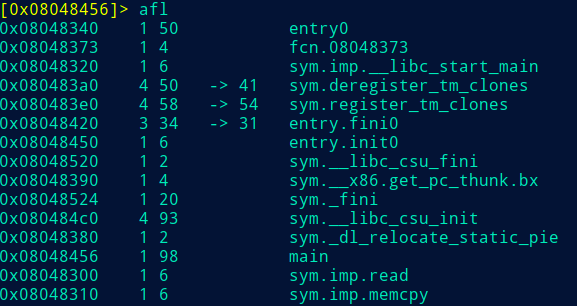
4. s function 跳转到想跳转的位置（function）
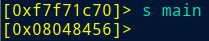
5. VV进入图形化模式（hjkl移动图像）使用 p/P 切换图形模式，空格切换文本图形模式，文本下可以用p切换模式，小写的vv用来粗略浏览函数信息
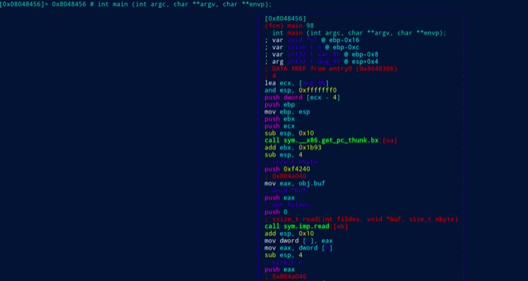
6. pdf查看函数汇编代码
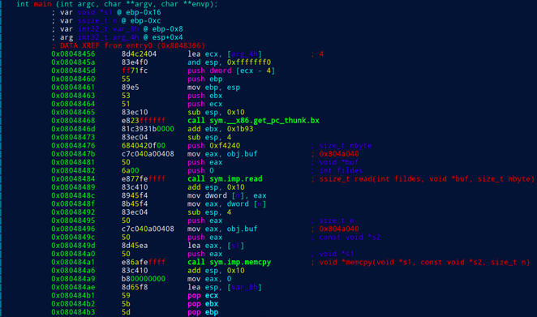
7. pd x打印汇编信息x条
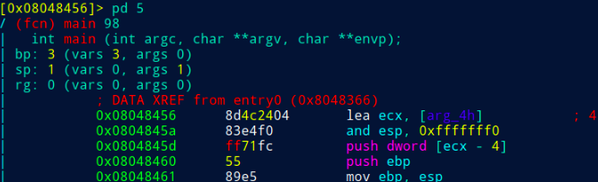
8. "wa xxx"修改汇编指令为xxx
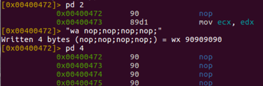
9. px表示打印16进制数，默认从当前位置开始，参数控制打印的字节数
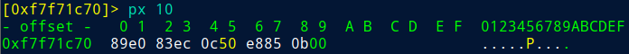
10. 直接使用 r2 filename 进入程序。使用-d选项进入调试模式，输入!在调试的时候可以看到历史操作记录

11. pdc反汇编函数
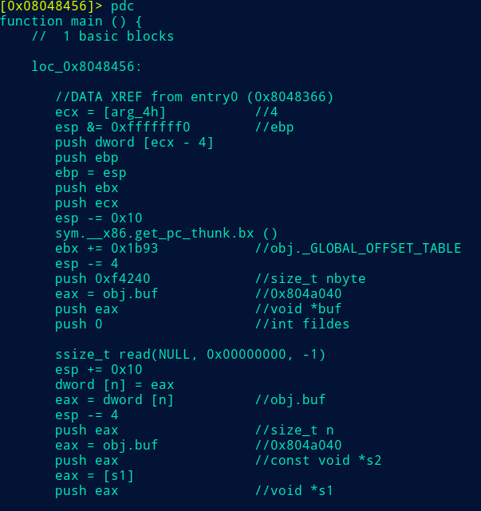
12. afx查看调用函数
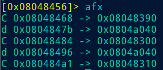
13. ?可以查看帮助，这个工具非常强大，需要多实践学习
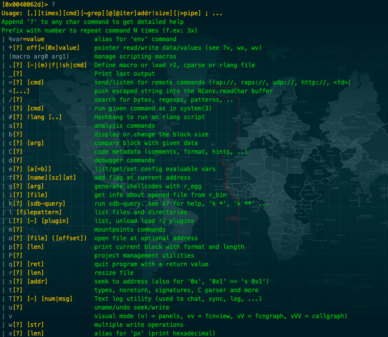